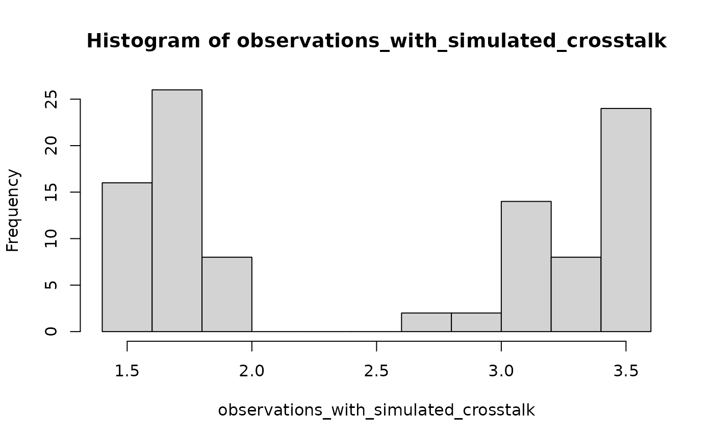

Add crosstalk, evenly spread in rook (top-right-bottom-left) directions, to all grain whole locations on one measurement discs (=on position on a measurement wheel in a reader). An added crosstalk value of as example 0.2 means that 0.2 of the value of the central grain is added to each grain in the rook directions. This is an additive action: the central grain itself is not affected by this operation (but will on its turn increase because of crosstalk from its neighbours). This function is used for simulations: can this added crosstalk be detected?
Arguments
- object
RLum.Results or numeric (required): containing a numerical vector of length 100, representing one or more measurement discs ("positions") in a reader. Each element in the vector represents one grain hole location on a disc.
- n_crosstalk
numeric (with default): A single number quantifying the added crosstalk. Defaults for testing purposes to 0.2. Can be any number, even negative, but for realistic simulations we suggest something between 0 and 0.25.
Value
A vector of size 100, with the value at each grain hole location including simulated crosstalk.
How to cite
Boer, A.d., Steinbuch, L., 2025. apply_Crosstalk(): Apply crosstalk. In: Kreutzer, S., Burow, C., Dietze, M., Fuchs, M.C., Schmidt, C., Fischer, M., Friedrich, J., Mercier, N., Philippe, A., Riedesel, S., Autzen, M., Mittelstrass, D., Gray, H.J., Galharret, J., Colombo, M., Steinbuch, L., Boer, A.d., 2025. Luminescence: Comprehensive Luminescence Dating Data Analysis. R package version 1.1.0. https://r-lum.github.io/Luminescence/
References
de Boer, A-M., Steinbuch, L., Heuvelink, G.B.M., Wallinga, J., 2025. A novel tool to assess crosstalk in single-grain luminescence detection. Submitted.
Author
Anna-Maartje de Boer, Luc Steinbuch, Wageningen University & Research, 2025 , RLum Developer Team
Examples
## Create artificial disc observation
observations <- set_RLum(class = "RLum.Results",
data = list(vn_values = rep(x = c(1,2), each = 50))
)
hist(get_RLum(object = observations))
## Add crosstalk (with default set to 0.2), and visualize the difference
## in the resulting histogram.
observations_with_simulated_crosstalk <- apply_Crosstalk(observations)
hist(observations_with_simulated_crosstalk)
